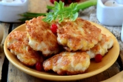

Закуски и салаты.

Салаты – идеальная еда для ленивого человека, прежде всего, из-за быстроты приготовления и отсутствия необходимости подогревания: нарезал пару овощей, залил сметаной или заливкой, и блюдо готово.
Салаты к нам пришли из Древнего Рима и представляли собой одно единственное блюдо из сырых зеленых овощей и огородных трав. Приправляли такой салат медом, перцем, солью и уксусом.
В средние века во Франции салат приготавливали из зеленого лука, перьев чеснока, мяты и листьев петрушки. Он хорошо сочетался с мясом. Те же французы ввели в состав салата латук – листья без вкуса.
В самом конце XVIII века в салат стали добавлять капусту всех видов. Позже в салат попали свежие огурцы, спаржа, артишоки.
Как заправку для салатов французы использовали сухое вино и винный уксус с добавлением соли и перца. А иногда это был лимонный сок с оливковым маслом и душистыми и пряными приправами. Затем в салат стали включать не только зеленые овощи, но и корнеплоды. Заправки для салатов стали усложняться.
Когда в салаты стали добавлять отварные, соленые или квашеные овощи, а позже рыбу, мясо, яйца и дичь, они превратились в самостоятельные блюда.
Современный словарь объясняет слово «салат» как блюдо из мелко накрошенных овощей, мяса, рыбы, яиц, грибов, фруктов в холодном виде. Таким образом, подчеркиваются две особенности этого блюда: крошеное и холодное.
Сегодня салатом называют любую съедобную смесь, приготовленную быстро, на скорую руку:
• морскую: моллюски, креветки, омары и прочие обитатели моря;
• мясную: колбасно-ветчинные смеси с картофелем, зеленым горошком под майонезом.
На протяжении многих лет сложились определенные правила их композиции:
• продукты в салате должны быть совместимы по вкусу. Могут использоваться почти все известные человечеству пищевые продукты и их сочетания;
• каждому салату соответствует своя заправка. Неподходящей заправкой можно испортить хорошо подобранный салат;
• любые салаты, а особенно зеленые, солят перед подачей на стол. Салаты из нежных овощей и нежной пряной зелени совсем не солят, а заправляют лимонным соком и чуть-чуть перчат. От соли зелень быстро теряет свой сок, жухнет, вянет и теряет вкус;
• подавая салат на стол, проверяют, не повторяет ли он по составу другие блюда на столе и не противоречит ли он им. Так, зеленый салат из трав или помидоров не подают перед молочным супом. А салат из капусты не подают перед борщом;
• салаты-закуски могут содержать неовощные компоненты;
• салаты, которые подаются ко второму блюду, должны вызвать аппетит, а не насытить;
• к жирному мясному блюду, вроде плова, или хорошему стейку, приготовленному на мангале, подойдут салаты из яблок и чеснока, из вишен, лука, зеленых перьев чеснока и укропа, из помидоров и репчатого лука, из стеблей сельдерея и т. д.;
• к рыбе подойдет салат из мягких отварных овощей (морковь, картофель с луком) и острой заправкой из хрена, перца, лимонного сока и маслин.
Салат должен быть сочным – это основное его достоинство. Поэтому сегодня наблюдается тенденция к приготовлению салатов из очень крупных кусков.
При этом хорошо учитывать цвета овощей, чтобы салат получился нарядным, разноцветным.
Характерная особенность этих салатов – их простота в приготовлении, строгость, естественность, легкая заправка (лимон, оливковое масло, бальзамический или винный уксус) или ее отсутствие. Салаты лучше заправлять растительным маслом. Любой салат будет вкусным с кисло-сладким соусом: отдельно в 1/4 стакана воды размешать соль, сахар и лимонный сок.
Салат диетический из кальмараИнгредиенты: 400 г филе кальмара, 1 яйцо, 2картофелины, 1 морковь, 1 яблоко, 2–3 ст. ложки сметаны, зелень петрушки.
Приготовление: отварить филе кальмара и нарезать соломкой. Сырые яблоки, морковь и вареный картофель нарезать ломтики. Все соединить и залить сметаной. Украсить зеленью.
Салат из копченой рыбыИнгредиенты: 3 рыбки горячего копчения среднего размера, 6 картофелин, 3 соленых огурца, 2 луковицы, 2 сладких яблока, 2 стакана сметаны, сахар, соль, молотый черный перец, горчица, уксус по вкусу.
Приготовление: картофель очистить и сварить в подсоленной воде до готовности, порезать мелкими кубиками. Разделать рыбу, удаляя кожу и кости, и нарезать небольшими ломтиками. Очищенную луковицу измельчить, яблоко нарезать кубиками, огурцы – тонкими ломтиками. Приготовить заправку: в сметану добить все специи и хорошо перемешать. В глубокий салатник выкладывать последовательно слоями: половину картофеля, рыбы, луковицы, яблока, огурцов и заправить 1 стаканом сметаны, в которую добавить специи. Затем выложить в той же последовательности оставшиеся компоненты и заправитьсметаной.
Салат с кальмарамиИнгредиенты: отварные или консервированные кальмары, отварное куриное мясо, свежие яблоки(можно заменить маринованными огурцами).
Приготовление: все компоненты взять поровну и нарезать соломкой, все перемешать, посолить и заправить майонезом, разложить на листья зеленого салата. В качестве украшения использовать ломтики лимона, сладкого перца и рубленую зелень.
Кальмары в сметанеИнгредиенты: 700–800 г кальмаров, 2 средние луковицы, неполный стакан сметаны (можно взять в равных частях сметану и майонез), соль, перец и приправы по вкусу.
Приготовление: обработанные тушки кальмаров нарезать крупными прямоугольными ломтиками. Посолить, поперчить, обвалять в муке и обжарить на растительном масле до золотистого цвета. Отдельно пассеровать репчатый лук и добавить его вместе со сметаной в сотейник с кальмарами. Тушить на маленьком огне приблизительно 15 мин, закрыв посуду крышкой.
Рулет из кальмаровИнгредиенты: 1 кг сырых кальмаров, 1 ломтик хлеба, 1 луковица, 1 зубчик чеснока, 2 вареных яйца, 100 г тертого сыра, зелень, 2 ст. ложки растительного масла.
Приготовление: пропустить через мясорубку сырые кальмары, ломтик хлеба, луковицу и зубчик чеснока, добавить растительное масло. Выложить фарш на пищевую пленку и разровнять. На фарш положить рубленые яйца, тертый сыр, зелень, посолить и поперчить. Фарш свернуть рулетом и варить 15 мин. Вынуть и удалить пленку.
Салат рыбный деликатесныйИнгредиенты: 95 г филе рыбы частиковых пород или 90 г осетровых пород, 55 г картофеля, 40 г огурцов, 35 г помидоров, 30 г моркови, 25 г горошка, 35 г капусты цветной, 25 г фасоли стручковой, 40 г майонеза, 5 г острого томатного соуса, соль, перец, 10 г зелени.
Приготовление: можно использовать любую рыбу, не имеющую костей. Вареные картофель, морковь и сырые овощи (огурцы, помидоры) нарезать тонкими ломтиками, добавить зеленый горошек. Часть овощей и рыбы заправить майонезом и уложить в салатник горкой, вокруг которой уложить длинные ломтики рыбы, а кругом «букетами» – оставшиеся овощи и кочешки цветной капусты, незаправленные соусом. Салат украсить зеленью.
Салат из рыбного филеИнгредиенты: 300 г филе морской рыбы,1 яйцо,1/4 стакана майонеза, 1/4 стакана сметаны, 30 г зелени петрушки, 1 лимон, перец, соль.
Приготовление: филе морской рыбы отварить, охладить и нарезать тонкими ломтиками, а сваренное вкрутую яйцо – кубиками. Сложить все в посуду, добавить по вкусу перец и соль. Перемешать, полить майонезом, смешанным со сметаной, посыпать мелко нарубленной зеленью петрушки, украсить веточками петрушки и ломтиками лимона.
Салат с овощамиИнгредиенты: 200 г рыбы, 50 г картофеля, 50 г свежих огурцов, 150 г овощей, 50 г сметаны, уксус, зелень, соль.
Приготовление: очищенную рыбу отварить в воде, в которую добавить ароматические коренья и специи. Готовую рыбу отделить от кожи и костей и нарезать кусочками. Сваренный в кожуре картофель очистить, нарезать мелкими кубиками. Морковь, цветную капусту и зеленый горошек отварить в соленой воде. Морковь нарезать кусочками, цветную капусту разделить на розетки. Охлажденные составные части салата перемешать со сметаной, заправленной солью, уксусом и измельченной зеленью.
Сельдь с лукомИнгредиенты: 3 соленые селедки, 3 луковицы, 3 ст. ложки растительного масла, 3 ч. ложки уксуса, зелень петрушки.
Приготовление: сельдь вымочить, очистить, отделить филе от костей, нарезать поперек на кусочки, уложить в селедочницу. Сверху посыпать кольца лука, полить растительным маслом и уксусом, украсить зеленью петрушки. Для оформления блюда можно использовать зеленый лук, ломтики картофеля, сваренного в кожуре, брусочки свеклы, звездочки моркови, моченую бруснику. Свеклу нужно заправить растительным маслом, иначе она окрасит и сельдь и другие овощи.
Рыба под маринадомИнгредиенты: 600 г рыбы, 2 луковицы, 120 г моркови, 120 г томатного пюре, 120 мл уксуса, 30 г сахара, 400 мл воды, перец черный горошком, лавровый лист, корица, гвоздика, соль.
Приготовление: взять крупную рыбу, нарезать ее на куски, мелкую рыбу оставить целой. Подготовленную рыбу сбрызнуть уксусом и выдержать 15 мин. В кипящую подсоленную воду положить нарезанную звездочками или кружочками морковь, нашинковать кольцами лук и варить до полуготовности, затем добавить томат-пюре, специи, сахар, уксус и довести до кипения. В кипящий маринад положить рыбу и варить при слабом кипении 15 мин. Готовую рыбу охладить в маринаде и выдержать в нем 10 ч. Подать рыбу на блюде, украсив ее кружочками моркови, кольцами лука, зеленью петрушки, залив маринадом.
Рыба под овощным маринадомИнгредиенты: 900 г любой рыбы, молотый перец, мука, растительное масло для обжаривания, соль по вкусу. Для маринада: 4 моркови, 2 корня петрушки или сельдерея, 3 луковицы, 6 ст. ложек растительного масла, 1 стакан томата, 1 стакан рыбного бульона, 0,5 стакана слабого раствора лимонной кислоты, 2 лавровых листа, 8 горошин горького перца, 3 гвоздички, сахар, соль.
Приготовление: филе рыбы нарезать кусочками, посолить, поперчить, обвалять в муке, пожарить на растительном масле до готовности. Из головы, хвоста и костей сварить бульон. Очищенные, вымытые морковь и корни петрушки натереть на крупной терке, лук нашинковать полукольцами. Подготовленные овощи сложить в кастрюлю, влить растительное масло и слегка поджарить, добавить томат и тушить под крышкой 15 мин, время от времени помешивая. Затем добавить рыбный бульон, разведенную лимонную кислоту или уксус, положить лавровый лист, перец, гвоздику, сахар и соль по вкусу. Все вместе прокипятить 15 мин, охладить. Поджаренные охлажденные куски рыбы уложить на блюдо, залить маринадом и выдержать, чтобы рыба им пропиталась. Перед подачей на стол посыпать мелко нарезанной зеленью.

Ингредиенты: 0,5 кг сельди или килек, 3 желтка, 250 г сливочного масла, зеленый салат, зелень петрушки и укропа.
Приготовление: филе сельди или килек пропустить через мясорубку вместе с желтками сваренных вкрутую яиц и сливочным маслом. Затем смоченным ножом сформовать массу в виде булки и обложить зеленым салатом, веточками петрушки и укропа.
Закуска из икры зернистойИнгредиенты: 50 г икры зернистой или кетовой, 30 г лука зеленого.
Приготовление: икру зернистую или кетовую подать в икорнице или маленьком салатнике на льду. Отдельно на розетке подать нашинкованный зеленый лук. В торжественных случаях можно заморозить воду в форме.
Винегрет с рыбойИнгредиенты: 300 г рыбы, 3 картофелины, 1 небольшая свекла, 1 морковь, 2 соленых огурца, 150 г майонеза, 40 мл острого томатного соуса, специи, соль.
Приготовление: рыбу отварить со специями, охладить, нарезать ломтиками. Картофель, свеклу, морковь отварить, охладить, нарезать кубиками, смешать с рыбой, посолить, заправить майонезом и соусом.
Винегрет с сельдьюИнгредиенты: 2 сельди, 4 картофелины, 1 средняя свекла, 2 моркови, 4 соленых огурца, 2 яйца, 100 г майонеза, уксус, листья зеленого салата, соль.
Приготовление: филе вымоченной сельди нарезать кусочками. Картофель, свеклу и морковь отварить, охладить, нарезать кубиками, огурцы мелко нарезать. Все хорошенько перемешать, заправить майонезом и уксусом, посолить, украсить кусочками сельди, листьями салата и цветком из яйца.
Рыба заливнаяИнгредиенты: 1 кг рыбы, 1 луковица, 1 морковь, 10 г желатина, 2 лавровых листа, соль.
Приготовление: рыбу порезать на куски. Кости, голову, очищенную от жабр, икру, плавники сложить в кастрюлю, добавить коренья, лавровый лист, лук, соль, залить водой и поставить варить. Через 20 мин в эту же кастрюлю положить куски рыбы. Когда они будут готовы, их вынуть, уложить на блюдо в форме целой рыбы с небольшими промежутками между кусками, накрыть мокрой тканью и поставить блюдо в холодное место. Бульон, который получился от варки, слить и приготовить 2 стакана желе. Каждый кусок рыбы украсить ломтиками лимона, моркови, нарезанной в виде звездочек, листком зелени и залить полузастывшим желе. Заливать в 3 приема. Поставить в холодное место.
Заливное из сельдиИнгредиенты: 2 сельди, 1 луковица, 1 ст. ложка растительного масла, 2 яйца, 2 ч. ложки уксуса, сахар, горчица.
Приготовление: разделанное филе сельди нарезать кубиками, репчатый лук измельчить и пассеровать в растительном масле, сырые яйца взбить с уксусом, залить лук, прогреть, заправить сахаром и горчицей, дать остыть. Украсить.
Заливное из сельди со сливкамиИнгредиенты: 300 г филе сельди, 2 яблока, 2–3 яйца, 3–4 картофелины, 1,5 ст. ложки уксуса, 200 мл сливок, 50 г масла.
Приготовление: ломтики подготовленной сельди засыпать мелкими кубиками очищенных яблок, вареного картофеля и репчатого лука, перемешанными с нарубленными белками крутых яиц. Для заправки смешать растертые желтки с растительным маслом, уксусом, сахаром, перцем и горчицей, развести смесь сливками.
Салат «Морское дно»Ингредиенты: по 200 г морской и краснокочанной капусты, 2 луковицы, 120 г крабовых палочек, 3 яйца, банка консервов скумбрии в масле, 250 г майонеза, свежая зелень, соль по вкусу.
Приготовление: на плоское блюдо положить слоями морскую капусту, нашинкованный репчатый лук, измельченные крабовые палочки, сваренные вкрутую и порубленные яйца и обильно залить майонезом. Затем выложить консервированную скумбрию, верхний слой – нашинкованная краснокочанная капуста. Полить майонезом и ложкой разровнять верх, украсить зеленью и кубиками из крабовых палочек.
Авокадо с креветкамиИнгредиенты: 3 авокадо, 4 сваренных вкрутую яйца, 200 г отварных креветок, 1 ст. ложка майонеза, 1 ст. ложка сметаны.
Приготовление: авокадо разрезать наполовину, вынуть косточки, осторожно отделить ложкой мякоть. Разложить на листья салата ямками вверх, заполнить начинкой.
Н а ч и н к а: мелко нарезать креветки, яйца кубиками, порезать оставшуюся возле кожицы авокадо мякоть и тоже добавить в начинку. Заправить майонезом и сметаной.
Рыба по-мароканскиИнгредиенты: 500–600 г филе скумбрии или морского окуня, 0,5 стакана свежевыжатого лимонного сока, 2 раздавленных зубчика чеснока, 1 ч. ложка молотого тмина, 0,5 ч. ложки молотого кориандра, 1/4 ч. ложки молотого мускатного ореха.
Приготовление: для приготовления маринада перемешать все ингредиенты в неглубокой посуде, в которой поместится вся рыба в один слой. Перевернуть куски рыбы, чтобы они полностью пропитались маринадом. Накрыть посуду пленкой и поставить в холодильник не более чем на 30–60 мин. Если мариновать рыбу больше 1 ч она начнет разваливаться. Пока рыба маринуется, ее нужно перевернуть 2–3 раза. Затем вынуть рыбу из маринада, положить на противень и запекать в духовке, затем перевернуть и запекать с другой стороны.